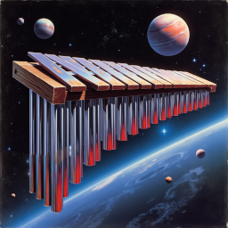
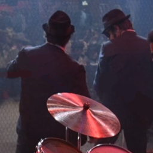
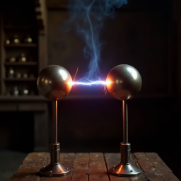

Sound Design
All of the sounds on this page are produced live in the browser. The source files audio.js and demo.js take just 63 kb - if the sounds were instead stored as .wav files they would be 1,187 times bigger.
|  | |
| ► play |
|  | ||||
|  |
Sound Examples
Short sound effects can be created pretty easily. Essentially, we'll take a few frequencies, delay or distort them, and add them together. Most tutorials go over how to create these sounds in synthesizers like Ableton or FL Studio, but they're not hard to create from source either. Source code also gives us the ability to adjust our algorithms in ways that are difficult for synthesizers.
Guitars and Strings
Given the popularity of musical instruments, I expected to find a large number of mathematical models simulating them with plenty of examples. This turned out to be a far cry from the truth - most of the models that were available were tersely described in academic papers with no code examples. Among the more legible models I found was Jason Pelc's research on guitar synthesis (here), which is what I based my simulator off of.
Surprisingly, the guitar, xylophone, and music box demos above were all generated from this stringed instrument model. It turns out that instruments that generate the majority of their sound waves from a linear medium all have similar equations governing them. The biggest failing of this model is the lack of body resonance, which makes the guitar emulation sound a bit hollow.
The model works by approximating the harmonics a string generates given a pluck position. Here are snippets of the coefficients:
The inharmonicity factor inharm determines the how well the harmonics approximate a pure string. A guitar has a low inharmonicity of 0.00006 while a xylophone has 0.37452. This leads to a xylophone having higher frequency harmonics as expected. Pure metal instruments will also decay faster than a guitar for instance.
This is the full function:
One thing that I found conflicting data on was frequency decay rates. We should expect a guitar string that vibrates at 200hz to decay twice as fast as a 100hz string. When looking at acoustic samples in the Magenta NSynth database I found, for instance, a 137hz guitar sample that took 1.801s to decay to -50db and a 230hz sample that took 2.082s. My guess is that instrument materials are picked so that vibrations last the same amount of time independent of frequency. In any case, this allows our model to stay simple, so I've stuck to increasing decay rates based on inharmonicity rather than pure frequency.
Explosions
Explosions are some of the easiest sounds to produce. An explosion is nothing more than an initial burst of noise followed by some reverb as the shockwave bounces around. Explosions that are closer to the listener will be higher in frequency, so as the frequency rises we emphasize noise closer to our target frequency. As the frequency drops, we instead emphasize the lower frequencies of the noise and increase the delay.
Filtering out frequencies from white noise is handled by biquad filters. Details about them are at the end of the page.
Lasers
Lasers are another sound effect that I expected to find very simple examples on how to generate the waveform, but in the end even the latter pages of Google turned up nil. Half of the results were people recounting how the Star Wars blaster sound was made with a slinky.
We know that lasers should be simple, since sci-fi movies have primed our ears to expect a simple sine wave with some distortion, and this is what my model does. In this case, the distortion is a delay with a twist. Where a traditional delay filter will repeat sounds from 1 second ago, 2 seconds ago, or some other constant, I've used a multiplier to calculate the delay offset.
For instance, the model's first delay has a time multiplier of 0.99. If we are at 2 seconds into the sound, the delay will find the sample at 2*0.99 = 1.98s, multiply it by -0.35 in this case, and add it to the current sample.
This delay multiplier effect works to slow the sound down as it plays out and give a complex sound not possible through traditional delays.
My biggest complaint is the need to scale the volume at the end, but the complex nature of the delays make calculating the peak value difficult.
Filters
From beginning this project with zero music knowledge, these are some of the quality of life features and algorithms I learned about that are make music generation much easier.
Biquad Filters
The samples above make heavy use of biquad filters. They're a simple way to emphasize, reduce, or isolate certain frequencies within a waveform (usually white noise). Since human hearing is based around decoding frequencies, this ends up being an immensely useful and simple way for creating sounds.
Biquad filters are order-2 filters with a simple processing function:
Different choices for a1, a2, b0, b1, and b2 produce different effects. The examples below show how the filters affect some white noise:
| none | |
| low-pass | |
| high-pass | |
| band-pass | |
| notch |
Delay Filters
These are very common for reverb or delay effects, which are needed for the more complex resonances in instruments. The simplest delay we can make looks like this:
This delay works for simple sounds, but has a subtle drawback: most delays are not an integer value. To fix this we just use linear interpolation:
Other testimonials I've come across have mentioned problems with linear interpolation in high frequency data. I've avoided using the common workarounds to keep the filter simple.
One feature we use that I don't see elsewhere is the use of a multiplier in addition to a delay constant. Where most filters return data[i-delay], I've found some utility in data[i*mul-delay]. That being said, the only places I use this are in the explosion and laser effects, so I've avoided adding a multiplier to the filter for now.
Envelope Filters
Envelope (or gain) filters describe the overall energy level of a sound throughout its lifetime. Since most sounds follow the pattern of energy input -> energy dissipation -> body reverb -> energy decay, this filter is a quality of life feature. Synthesizers will abuse envelopes to control things like frequency modulation.
Waveguides
One way to model the complex physical interactions in instruments is with banded waveguides. Searching online will most likely turn up diagrams like this (ref):
Almost all of my attempts to get this model to work have failed. One thing this model obscures away is the fact that splitting the wave into N bands multiplies the strength of wave by N when we sum them together. In only a few iterations the positive feedback will cause the signal to fly off towards infinity.
The simplest way to prevent this is to scale each bandpass filter by some coefficient so their sum is less than 1, with weaker frequencies being given smaller coefficients. This very quickly leads to the weaker frequencies tending to 0 while the stronger frequencies sound muted.
The smarter way to fix this feedback is to create the bandpasses so that if one responds strongly to the incoming signal, the others will not. This can be done by shrinking the bandwidth or spacing out the frequencies to minimize overlap. Spreading out frequencies is not ideal since we need specific frequencies to model the instrument in the first place, and shrinking the bandwidth causes the bandpass to act like a pure sine wave.
This is the point at which I gave up on banded waveguides. If I go back to this area, I'll most likely focus on a series of comb filters instead since they won't run into this positive feedback issue.
This is the only guitar sound I was able to produce with waveguides: play
Web Audio Difficulties
The articles and examples I read made javascript audio look like it would be as simple as load sound -> play sound. The reality is that those articles unintentionally disguise anti-annoyance features in browsers and gloss over two main issues:
| 1. | Browser tabs ALWAYS start off muted, and can only be unmuted after certain user gestures. |
| 2. | Sounds stopped with stop() can't be started again. |
Most articles and examples hide these limitations by making you play an example by clicking on a button - as it happens some click related events can also unmute a tab. The examples also usually only play a sound once, so starting and stopping several times is not a concern.
Tabs starting off muted is the first issue I noticed, but took the longest to solve. I saw some posts mentioning that "user interaction" is needed before a tab can play sound, but finding out exactly which ones took a while: it's these. For reference they're: keydown, mousedown, pointerdown, pointerup, and touchend. The simplest thing to do is add event listeners for these events and call audiocontext.resume(). This doesn't allow audio immediately however, it returns a promise and audio will be allowed some time later. After the audio context state turns to running, I remove the event listeners. Effectively:
This was also the source of a problem with iPhones, although I didn't know it at the time. iPhones seem to require you to resume audio with a certain time of those events (I think), and fail otherwise. This made my demos fail somewhat randomly when I asked friends with iPhones to test them.
Starting and stopping sounds multiple times is an annoying issue simply because I had never heard of an audio system that inherently doesn't allow pausing and unpausing sounds. After a lot of trial an error, including setting the volume to 0 or disconnecting and reconnecting, I decided to destroy the source audio node when paused and record the time. When starting again, I remake the sound and start from the recorded time.
Notes
As someone who was looking to dip their feet into music, I ran into several problems finding music compositions. I hoped to find a database that gives exact timing offsets for instruments instead of plain sheet music. If you're in the same position, my advice is to start with music box melodies or beginner guitar tabs as they're the easiest to transcribe from videos or recordings.
Most sound effects have exponential decay. Different frequencies have different decay rates based on material properties.
Most instruments are valued for the complex resonances their bodies have. Emulating that is what's needed to go from synthetic sounding to real sounding.
Thanks to Daniel for advice about how guitars work. "You're playing like you're an alien who's only studied human anatomy".